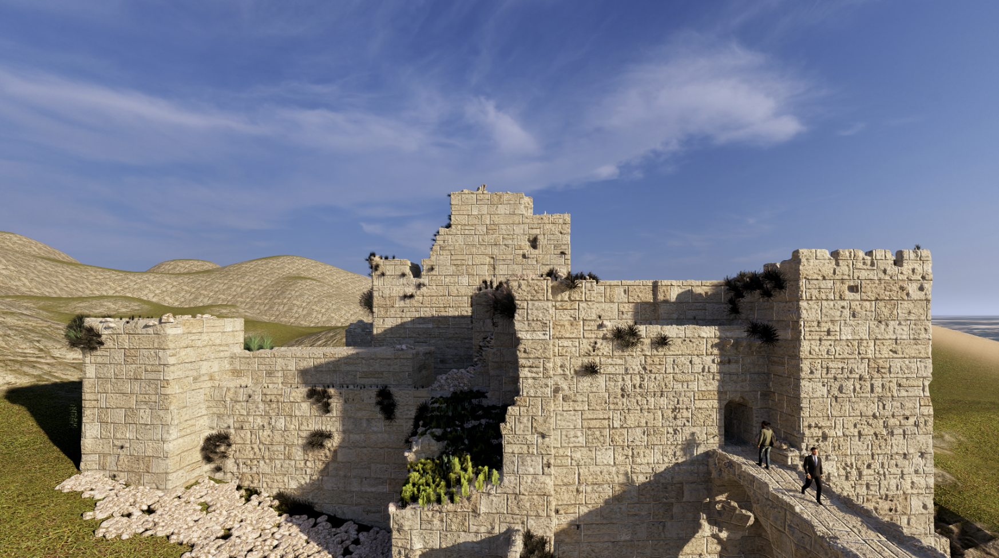
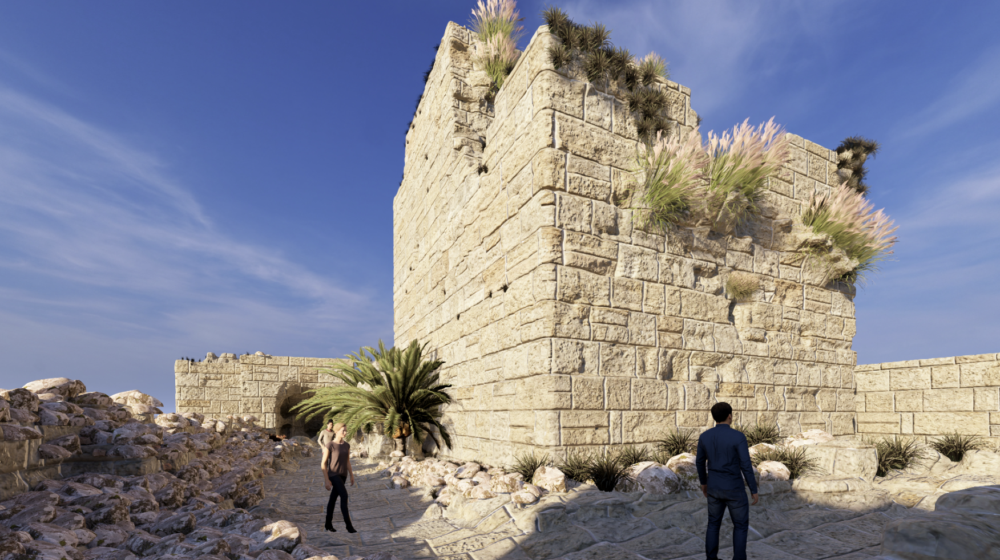
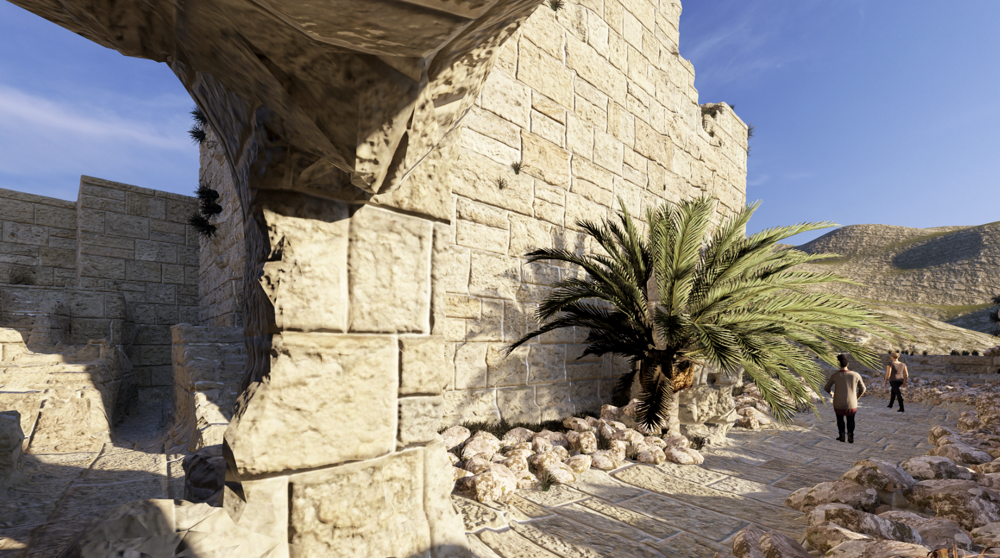
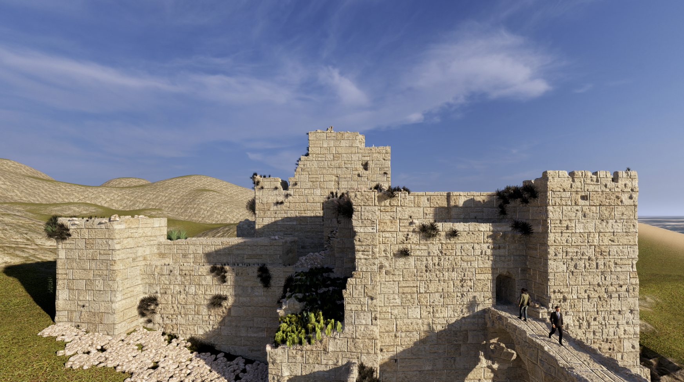
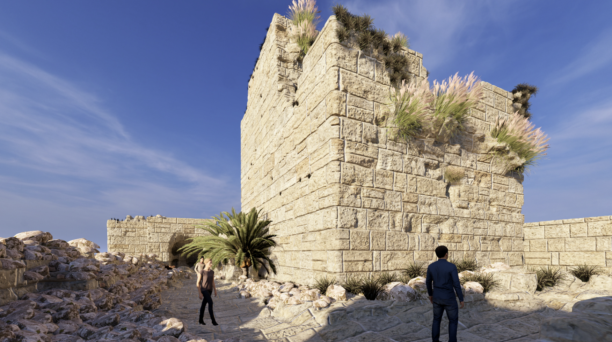
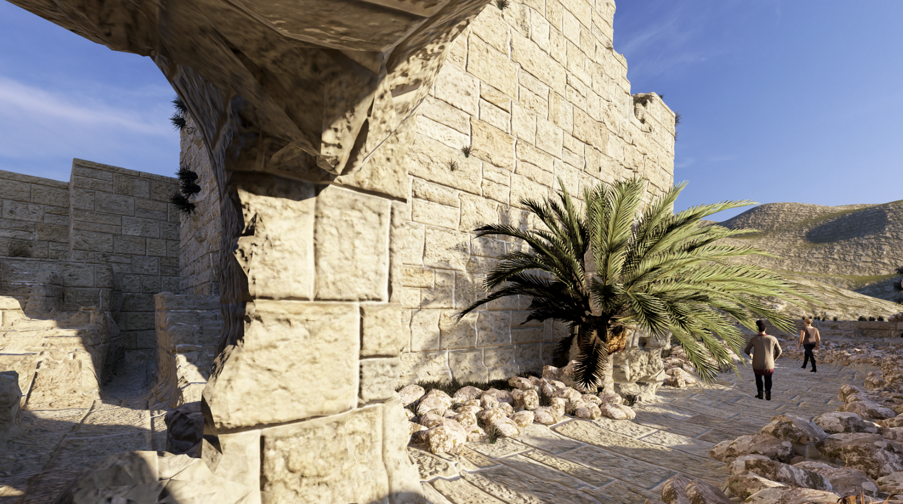

THE BYBLOS
CITADEL
A metaverse experience
A metaverse experience
Hill near Seaside Road, Near Byblos Fishing Port, Byblos, Lebanon
 





Enjoy authentic Lebanese cuisine or seafood with a view at top-rated restaurants around Byblos Citadel.
→
From charming guesthouses to boutique hotels, stay close to the ruins in comfort and style.
→Don’t miss the next cultural festival, concert, or open-air exhibition held within the Citadel or old souks.
→© 2025 AUB STUDENTS - All Rights Reserved